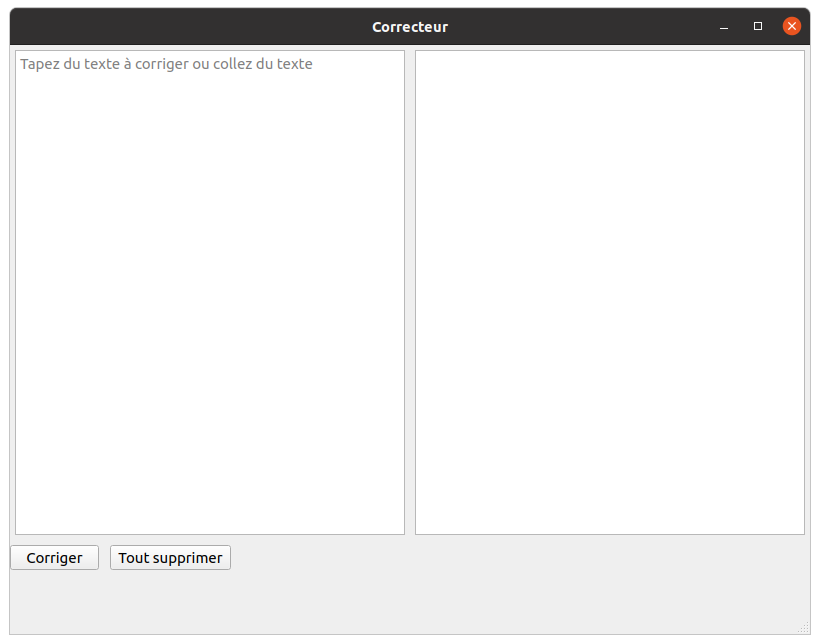
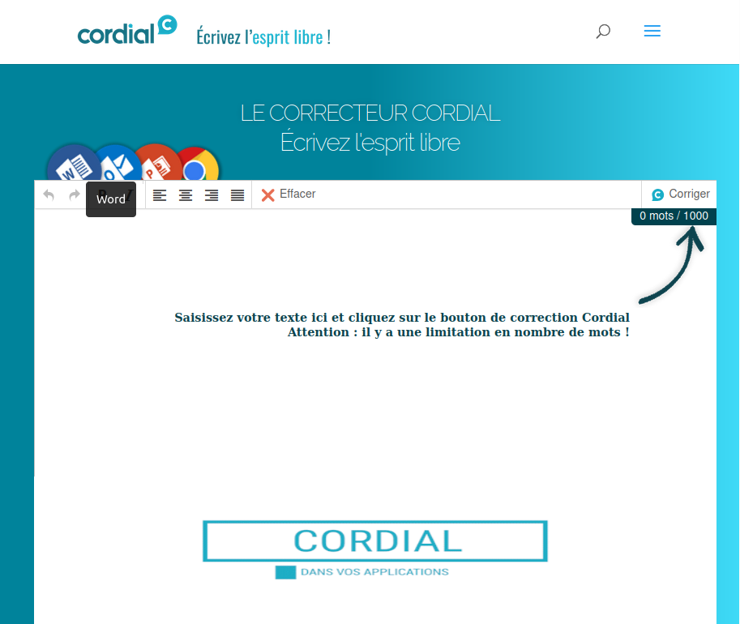

Projet de correcteur de français
Le projet est un correcteur orthographique en python, semblable au correcteur en ligne Cordial.
Le correcteur est réalisé en python, et implémente la base de données de mot Lexique383 ainsi qu'une
interface graphique réalisée avec PyQt5.
Plus sur le projet
Ce projet est réalisé dans le cadre du cours de projet spécialisé de la session 6 du Cégep de Matane.
Le projet est réalisé par moi, et le but de cette maintenance était de rajouter une interface graphique
utilisable par l'utilisateur. Dans le futur, j'aimerais aussi rajouter la possibilité de corriger des
expressions mathématiques dans l'application, pour en faire un correcteur mutlifonction.
Pour ce projet, j'ai décidé d'utiliser des technologies qui m'étaient inconnues pour progresser dans
mon domaine et améliorer encore mon adaptabilité et mes compétences.
Pour la correction des mots, j'ai choisis d'utiliser la librairie Lark, qui permet de créer une grammaire.
Je vais l'utiliser pour refaire la grammaire française dans mon application, et ainsi détecter les fautes.
Pour les fautes d'orthographe, j'ai choisi d'utiliser la base de mots français Lexique383 qui fait
partie du projet OpenLexicon, regroupant plusieurs bases de mots de différentes langues. La correction
des fautes se fait grâce à un algorithme qui va trouver des mots proches dans la base de données.
L'accès à cette base de données va se faire grâce à la libraire Pandas, qui est une librairie d'analyse
de données permettant de traiter des fichiers de données comme des .tsv, .csv, .xls ...
L'interface graphique est créée à l'aide PyQt5, une librairie permettant de créer des interfaces graphiques
en pyhton. Son aspect pratique grâce au QtDesigner, permettant de créer des interfaces graphiques
interractivement.
Recherche liées au projet
Lark
Lark est une librairie d'analyse python, permettant d'analyser la grammaire des langages, que ce soit
pour la programmation ou pour les langues naturelles. La librairie permet de créer une grammaire, pour
ensuite analyser des phrases. Grâce à ceci, je vais pouvoir corriger les fautes de grammaires dans les
phrases rentrées dans mon application.
Alternatives à Lark
Lors de mes recherches, j'ai identifié plusieurs parseurs. Un des concurrant de Lark
est Parsimonious, un parseur en python qui se veut le plus rapide. Cependant, en
comparant les syntaxes des deux j'ai trouvé que Lark était plus simple d'approche.
Ce projet étant réalisé en parallèle à d'autres j'ai opté pour la facilité
d'apprentissage, pour pouvoir passer le plus de temps possible sur la rédaction de
la grammaire.
PyQt5
Librairie python permettant de créer des interfaces graphiques en python. PyQt implémente le QtDesigner,
une interface graphique de manière interractive, sans avoir besoin de coder. Le QtDesigner permet aussi
d'avoir un aperçu des styles appliqués au GUI créées.
Alternatives à PyQt5
Pour créer une application en python, j'avais retenu 3 options de GUI : Tkinter,
PyForms, PyQt5. Cependant, malgré le fait que toutes sont plus ou moins
performantes, mon choix s'est porté sur PyQt à cause de son QtDesigner. Encore une
fois, j'ai choisis la rapidité de mon côté pour me laisser un maximum de temps
possible sur le coeur logique du projet.
OpenLexicon
OpenLexicon est un projet regroupant des bases de données des langues du monde entier. Dans ce projet,
j'utilise la base de données Lexique383 qui est une base de données regroupant tous les mots de la langue
française. Sur la page d'accueil de GitHub de OpenLexicon, ils donnent quelques exemples d'accès aux
bases de données à l'aide de différentes librairies/langages
Pandas
Librairie python qui permet d'accéder à des bases de données stockées dans des fichiers. Par la suite on
peut trier les données pour les utiliser. Tout ce qui est possible en SQL est possible avec Pandas, ce
qui va me donner la possibilité de corriger des mots, en cherchant des anagrammes
dans le lexique.
Alternatives à Pandas
J'ai trouvé Pandas en découvrant OpenLexicon, car sur la page d'accueil du github du
projet une courte démonstration. Mais il y avait aussi une autre manière d'accéder
aux données des bases, et c'était avec le langage R. Le seul soucis est que, comme
cité précédemment, R est un langage. Et Pandas et R faisant les mêmes choses, j'ai
préféré me diriger vers Pandas, que je peux implémeter directement en Python.
Numpy
Incontournable librairie de création de fonctions mathématiques et de calcul, Numpy va me permettre de
faire la correction des expressions mathématiques dans le futur.